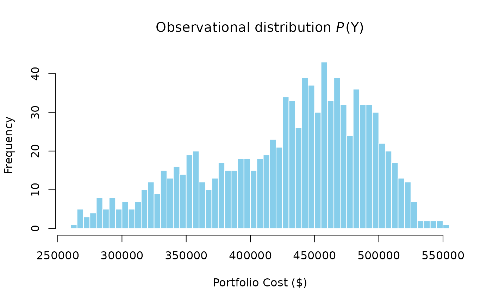
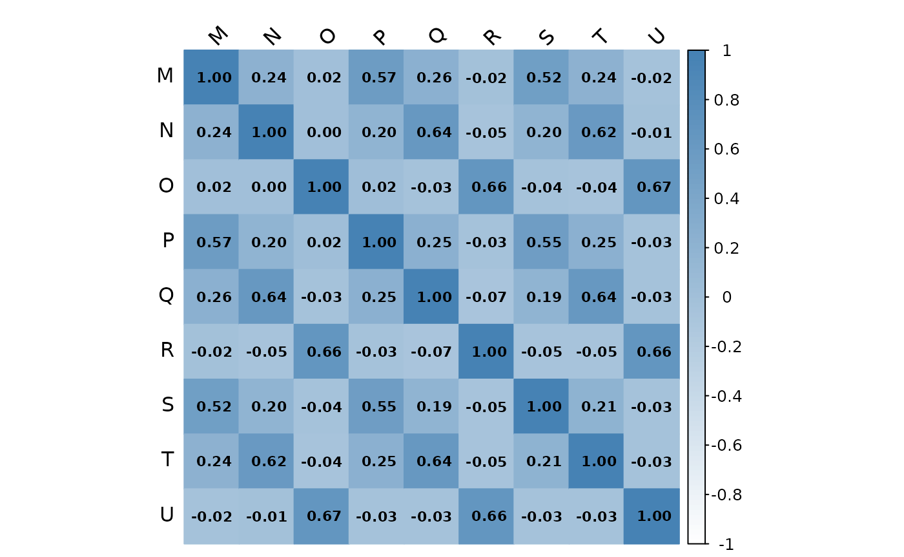
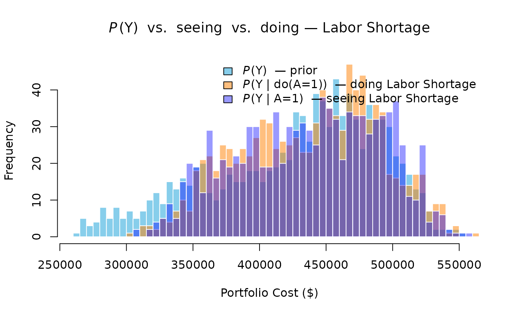
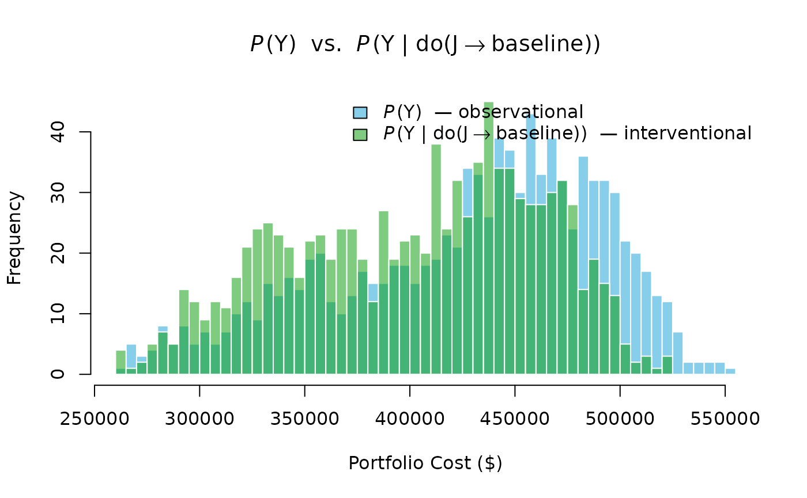
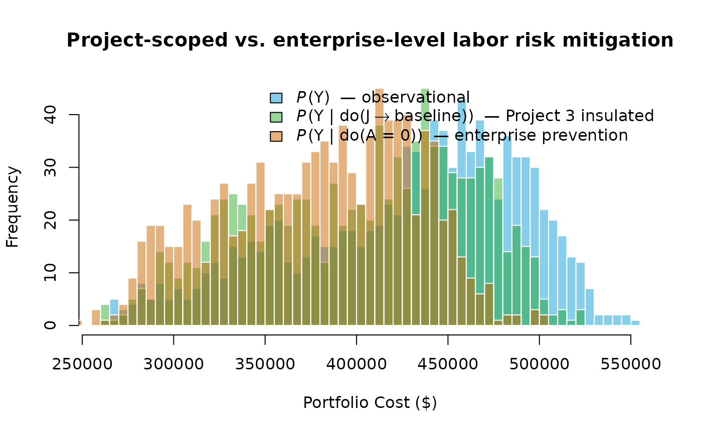
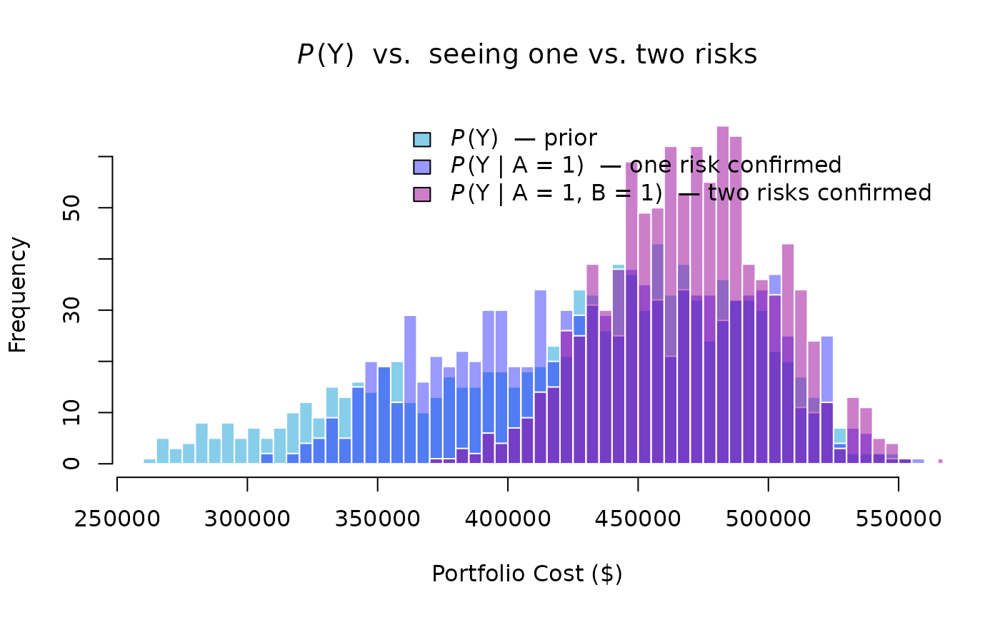
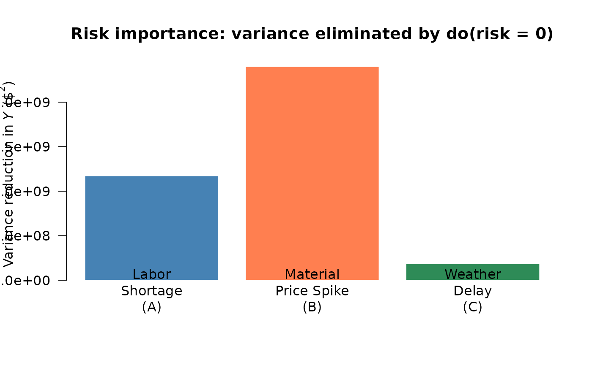

Probabilistic Networks for Project Portfolio Risk Analysis
Source:vignettes/network2.Rmd
network2.RmdCase Study
Consider an enterprise running three projects at the same time: a Road Repair, a Park Construction, and a Building Renovation. Each project has three tasks driven by three resources, labor, materials, and equipment. Critically, these resources are shared at the enterprise level: the same labor pool, the same material suppliers, and the same equipment fleet serve all three projects.
This sharing creates direct portfolio-level risk. Three enterprise-wide risk events, a Labor Shortage, a Material Price Spike, and a Weather Delay, each propagate through the corresponding shared resource to impact all three projects simultaneously. A single risk event therefore inflates costs across the entire portfolio, not just one project.
Critically, two of these risks, the Labor Shortage and the Material Price Spike, share a common upstream driver: a Supply Chain Disruption that simultaneously tightens the labor market and raises commodity prices. This upstream dependence means that observing a Labor Shortage is Bayesian evidence that a Supply Chain Disruption is underway, which in turn raises the probability of a Material Price Spike. It is precisely this structure, a root cause fanning out to multiple risks, which fan out to shared resources, that makes the distinction between seeing and doing empirically consequential at the portfolio level.
Tasks
The primary tasks for each project are as follows.
| ID | Label | Task | Project_ID |
|---|---|---|---|
| M | Task-1.1 | Site Preparation | V |
| N | Task-1.2 | Road Paving | V |
| O | Task-1.3 | Final Inspection | V |
| ID | Label | Task | Project_ID |
|---|---|---|---|
| P | Task-2.1 | Site Preparation | W |
| Q | Task-2.2 | Planting and Landscaping | W |
| R | Task-2.3 | Final Inspection | W |
| ID | Label | Task | Project_ID |
|---|---|---|---|
| S | Task-3.1 | Demolition | X |
| T | Task-3.2 | Renovation and Build-Out | X |
| U | Task-3.3 | Final Inspection | X |
Resources
Each task is driven by one primary resource. Because all three projects draw from the same enterprise-wide labor pool, supplier network, and equipment fleet, the resource costs for like resources are correlated across projects.
| ID | Label | Resource | Task_ID | Task | Mean | SD |
|---|---|---|---|---|---|---|
| D | Resource-1.1 | Labor | M | Site Preparation | 30000 | 5000 |
| E | Resource-1.2 | Materials | N | Road Paving | 50000 | 8000 |
| F | Resource-1.3 | Equipment | O | Final Inspection | 20000 | 4000 |
| ID | Label | Resource | Task_ID | Task | Mean | SD |
|---|---|---|---|---|---|---|
| G | Resource-2.1 | Labor | P | Site Preparation | 25000 | 4000 |
| H | Resource-2.2 | Materials | Q | Planting and Landscaping | 30000 | 5000 |
| I | Resource-2.3 | Equipment | R | Final Inspection | 15000 | 3000 |
| ID | Label | Resource | Task_ID | Task | Mean | SD |
|---|---|---|---|---|---|---|
| J | Resource-3.1 | Labor | S | Demolition | 40000 | 6000 |
| K | Resource-3.2 | Materials | T | Renovation and Build-Out | 60000 | 10000 |
| L | Resource-3.3 | Equipment | U | Final Inspection | 25000 | 4000 |
Risks
The network includes one root cause and three risk events. The root cause (SC) is a Supply Chain Disruption that drives both the Labor Shortage and the Material Price Spike. The Weather Delay is independent of SC. Each risk event is enterprise-wide and impacts the corresponding shared resource across all three projects.
| ID | Name | Event | P_occurs | Children |
|---|---|---|---|---|
| SC | Root Cause | Supply Chain Disruption | 0.7 | A (Labor Shortage), B (Material Price Spike) |
| Risk_ID | Name | Risk | Parent | P_given_SC1 | P_given_SC0 | P_marginal | Resource_Impacted |
|---|---|---|---|---|---|---|---|
| A | Risk-1 | Labor Shortage | SC | 0.95 | 0.4 | ≈ 0.79 | Labor (D, G, J) |
| B | Risk-2 | Material Price Spike | SC | 0.85 | 0.25 | ≈ 0.67 | Materials (E, H, K) |
| C | Risk-3 | Weather Delay | — | — | — | 0.60 | Equipment (F, I, L) |
The shared root cause SC is what makes seeing and doing diverge at the risk level: observing raises the posterior probability of SC, which in turn raises the probability of — a side-effect that a causal intervention does not produce, because graph surgery severs SC’s influence on A without updating beliefs about SC itself.
Mathematical Formulation
The probabilistic network is a directed acyclic graph (DAG) whose structure is encoded in an adjacency matrix A (Govan, 2014, Ch. IV):
A is lower-triangular of size , where is the total number of nodes. The layers of the network — root cause sc, risks r, resources a, tasks t, projects, and portfolio — appear in topological order along both axes, so that every arc runs strictly from a lower-indexed parent to a higher-indexed child. This structure guarantees that the graph is acyclic and that probability distributions can be evaluated by a single forward pass in topological order.
Probability Distributions
The root cause SC has a marginal Bernoulli prior with . Risks A and B are conditionally dependent on SC; C is independent. The joint distribution of the root cause and the three enterprise risks is:
where , , giving marginal ; , , giving marginal ; and marginally.
Each resource cost is conditionally dependent on its parent risk :
For example, Labor-1 (node D) is distributed as:
Because the toy case simplifies each resource into a single cost node (rather than separate unit-cost and quantity nodes), task cost is a direct pass-through of its parent resource:
Projects and the portfolio are additive aggregates of their children:
Bayesian Inference
Given observed or hypothesised risk state , the marginal distribution of resource cost is obtained by marginalising over the risk:
Conditioning on evidence, for instance, setting to represent a confirmed Labor Shortage, replaces with a point mass at 1, which updates every resource node that depends on simultaneously and propagates the shift through tasks, projects, and the portfolio (Govan, 2014, Ch. IV).
Algorithms
Algorithm 1 — Monte Carlo Sampling for Portfolio Cost
Given the network structure, a single Monte Carlo sample of portfolio cost is generated as follows (Govan, 2014, Ch. IV):
- Draw ; then draw , , and independently.
- Draw for each of the nine resource nodes, using the risk realizations from step 1.
- Compute task costs , project costs , and portfolio cost .
Repeat times to obtain the sample , from which the empirical distribution of portfolio cost is approximated.
Algorithm 2 — Monte Carlo Estimation of the Task-Cost Correlation Matrix
- Generate samples of all nine task costs using Algorithm 1, and collect the draws into column vectors each of length .
- Compute the sample correlation matrix whose entry is .
Tasks that share a common parent risk will exhibit positive correlation in this matrix; tasks whose parent risks are distinct will be uncorrelated. The magnitude of each correlation coefficient therefore quantifies the degree of cross-project coupling introduced by each shared enterprise risk.
Implementation. prob_net_sim()
implements Algorithm 1: it draws Monte Carlo samples in topological node
order and returns the joint sample matrix. prob_net_learn()
implements Algorithm 2’s conditioning step by fixing observed node
states and re-sampling the downstream distribution.
prob_net_update() performs graph surgery prior to
re-simulation by removing specified edges and replacing node
distributions, enabling the do(·) queries demonstrated below.
Model validity. All inferences derived from the network rest on the DAG being correctly specified. Misspecified edges or omitted confounders would invalidate the conditional and interventional results. In practice, the DAG structure should be grounded in domain knowledge (the Work Breakdown Structure, Resource Breakdown Structure, and risk register) and subjected to sensitivity analysis before operational use.
Probabilistic Network
A probabilistic network is built from three components: nodes, links (edges), and probability distributions. The nodes represent variables; the edges represent cause-and-effect dependencies; the distributions encode uncertainty at each node. The following constructs the network from the node, link, and distribution specifications laid out in the preceding section.
First, define the nodes.
Next, define the edges. The structure follows the Resource-based View hierarchy: risks flow into shared resources, resources drive tasks, tasks roll up into projects, and projects aggregate into the portfolio.
Then define the probability distributions for each node.
Build the network and visualize it using the igraph and
networkD3 packages.
The network graph makes the shared-risk structure immediately visible: each of the three risk nodes fans out to the same resource type across all three projects. This is the graphical representation of the Resource-based View argument, shared resources are the structural pathway through which risks propagate across the portfolio. Note that the force-directed layout positions nodes for visual clarity only; causal ordering is determined by the topological sort of the DAG and encoded in the direction of the edges, not by left-right or top-bottom node placement.
Inference
Following Pearl (2009), a causal network supports three qualitatively distinct queries: the observational distribution , the conditional distribution under seeing , and the interventional distribution under doing . The three are generally different, and conflating them is the source of the most common errors in causal reasoning. This section treats each in turn.
The observational query is computed by Monte Carlo simulation over the joint distribution implied by the DAG’s factorisation. Each sample draws a realization of every risk event, propagates costs through the conditional resource distributions, and sums to a portfolio total.

The histogram reflects the combined uncertainty of all three shared risks. Because each risk affects all three projects, the tails of are heavier than they would be if risks were independent — a direct consequence of the shared-resource structure.
To quantify the cost of ignoring cross-project dependencies, compare the portfolio variance under the causal network against the sum of individual project variances. Under independence, , because projects would be uncorrelated. Under the causal network, shared risks introduce positive covariance terms:
In this simulation, the causal network gives a portfolio cost variance 2.21× larger than the naive independent-projects estimate — the factor by which a portfolio analyst ignoring shared resources would underestimate portfolio risk.
Algorithm 2 quantifies the cross-project coupling directly. The task-cost correlation matrix reveals which task pairs are correlated and by how much, with all correlation driven by the three shared enterprise risks.

Task-cost correlation matrix (Algorithm 2). Colour intensity encodes the correlation coefficient; numerical values are shown in each cell. Tasks sharing a common enterprise risk are strongly positively correlated; tasks driven by different risks are near zero.
Tasks driven by the same enterprise risk — Labor (M, P, S), Materials (N, Q, T), and Equipment (O, R, U) — are strongly positively correlated across projects. Tasks driven by different risks are uncorrelated. The block structure of the matrix is a direct signature of the shared-risk mechanism: three correlated blocks along the diagonal, with near-zero entries everywhere else.
Seeing vs. Doing at the Risk Level
The second and third queries — seeing and doing — are both demonstrated here at the risk level, where the presence of SC makes the two operations genuinely diverge.
Seeing conditions on the observation in the original, unchanged DAG. Bayes’ rule propagates the evidence upstream as well as downstream:
Because SC is a parent of A, observing raises the posterior probability of SC:
This elevated posterior for SC in turn raises the conditional probability of the Material Price Spike:
compared to the prior . Seeing a Labor Shortage therefore shifts material cost distributions upward as a side-effect — a consequence that flows through the shared root cause SC, not through any direct A→B link.
Doing performs graph surgery — severing SC→A and replacing A’s distribution with a point mass at 1. The truncated factorisation removes SC’s influence on A entirely:
Because SC→A is severed, SC remains at its prior , and B remains at . Material costs are unaffected. Only labor costs shift.

The three distributions separate in the expected direction. The doing distribution (orange) lies between the prior and the seeing distribution (blue): it captures only the direct labor cost increase. The seeing distribution shifts further right because it also picks up the indirect material cost increase propagated through SC. The gap between the two interventional and observational posteriors is the quantitative signature of the shared root cause — and the practical reason the distinction matters to portfolio managers. An analyst who treats a confirmed Labor Shortage as equivalent to an intervention on labor would underestimate portfolio cost exposure by ignoring the correlated material price signal it carries.
Doing
The third query is intervention, denoted by Pearl’s
do(·) operator. Unlike seeing, intervening does not
condition on data in the original graph; it performs graph
surgery — severing the incoming edges of the intervened node
and replacing its conditional distribution with a post-intervention
distribution. The interventional distribution is given by the
truncated factorisation (Pearl, 2009):
where every factor corresponding to an intervened variable is deleted from the product.
Suppose the enterprise secures a dedicated labor crew for the Building Renovation (Project 3) that is insulated from the enterprise-wide labor shortage. This is an intervention on Labor-3:
The intervention is implemented as graph surgery: the arc is deleted, and is assigned its baseline unconditional distribution. Sampling from the mutilated graph yields draws from .

The interventional distribution has a measurably lower mean and a thinner upper tail than the observational distribution. This is the operational pay-off of the Resource-based View seen through Pearl’s lens: by severing a single arc in the causal graph, portfolio tail exposure is reduced without changing anything about the labor markets for Projects 1 or 2.
The distinction between seeing and doing is the practical point. Seeing a Labor Shortage does not change the world; it only updates beliefs. Doing an intervention, hiring a dedicated crew, changes the causal structure itself. Pearl’s do-calculus makes this distinction formal and computable: the interventional query is answered by Monte Carlo simulation on the mutilated graph, not by Bayesian conditioning on the original.
Risk-Prevention Intervention
The preceding intervention targeted a single project’s resource. A second and more powerful lever is enterprise-level risk prevention: eliminating the Labor Shortage entirely rather than insulating one project from it. This corresponds to
The graph surgery removes all three arcs , , and assigns every labor node its baseline (risk-absent) distribution unconditionally. Because A is now severed from all its children, the labor cost across all three projects simultaneously reverts to baseline, not just Project 3’s.

The enterprise-prevention distribution is shifted further left than the project-scoped intervention because it removes labor-shortage exposure from all three projects simultaneously, not just one. The gap between the two interventional distributions quantifies the additional portfolio benefit of an enterprise-level mitigation strategy over a project-level one.
Seeing Two Risks at Once
A single confirmed risk shifts the portfolio distribution noticeably. Confirming two shared risks simultaneously compounds the effect: both the mean and the upper tail shift, because two correlated-risk channels are now active at once.
Suppose both the Labor Shortage and the Material Price Spike are confirmed — and simultaneously:

Confirming two shared risks produces a larger rightward shift than confirming one, and the distribution also broadens because the compound observation eliminates variation from two risk channels simultaneously. In a real portfolio, this highlights the value of early risk detection across all shared resources, not just the highest-probability one.
Risk Importance Ranking
Portfolio managers cannot mitigate every risk simultaneously. A natural question is: which shared risk contributes most to portfolio cost variance? The causal network answers this directly by running three separate enterprise-prevention interventions — , , — and measuring the variance reduction each produces.

Risk importance: portfolio cost variance eliminated by preventing each enterprise risk. A taller bar means that risk is the dominant driver of portfolio uncertainty.
The bar heights rank the three enterprise risks by their contribution to portfolio cost variance. A taller bar means that risk, if prevented, would eliminate more portfolio uncertainty. This ranking gives portfolio managers a principled basis for prioritizing mitigation investments: address the risk with the highest importance score first.
Summary
The following table collects key statistics from every scenario demonstrated above, converting each histogram into actionable numbers.
| Mean ($000) | SD ($000) | 95th Pct ($000) | |
|---|---|---|---|
| Observational P(Y) | 427.6 | 63.0 | 512.2 |
| Seeing P(Y | A = 1) | 437.5 | 53.7 | 518.4 |
| Seeing P(Y | A = 1, B = 1) | 469.8 | 32.4 | 520.2 |
| Doing do(J → baseline) [Project 3 insulated] | 403.0 | 58.9 | 489.0 |
| Doing do(A = 0) [Enterprise prevention] | 379.9 | 52.1 | 453.3 |